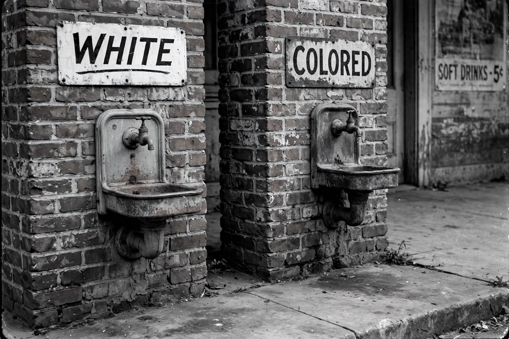

Jim Crow laws
From Wikipedia, the free encyclopedia

Jim Crow laws were state and local laws that enforced Racial segregation in the Southern United States from the late 1870s until the mid-1960s. Named after a blackface minstrel character, they mandated segregation in schools, transport, restaurants, restrooms and most public life, and — combined with poll taxes, literacy tests and violence — disenfranchised African Americans for generations.
Origins
After Reconstruction ended in 1877 and federal troops withdrew, Southern legislatures dominated by the Democratic Party dismantled Black political power. New state constitutions (Mississippi 1890 onwards) imposed poll taxes and literacy tests; segregation statutes spread through the 1890s–1900s. The Supreme Court upheld the system in Plessy v. Ferguson (1896), proclaiming 'separate but equal'.
The Jim Crow order
Segregation was enforced by law, custom and terror: an estimated several thousand African Americans were lynched between the 1880s and 1960s. The regime drove the Great Migration of six million Black Southerners to Northern and Western cities. Within the South, Black communities built their own institutions — churches, colleges, businesses — under constraint.
Dismantling
The legal edifice cracked with Brown v. Board of Education (1954), which declared school segregation unconstitutional, and fell with the Civil rights movement: the Montgomery bus boycott (1955–56), the Civil Rights Act of 1964 and the Voting Rights Act of 1965 banned segregation and protected the franchise. Historians debate continuities between Jim Crow and later mass incarceration and voter-suppression controversies.